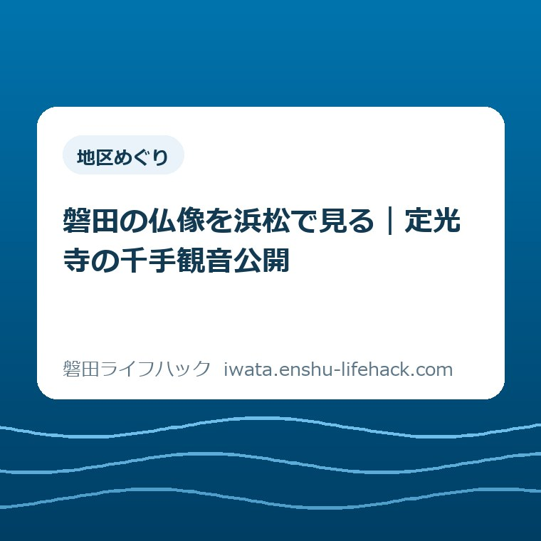

地区めぐり
磐田の仏像を浜松で見る｜定光寺の千手観音公開

この記事の要点
Q. 磐田の定光寺の千手観音は、いつ、どこで見られる？
A. 料金や催しの参加条件は年齢・手帳の有無などで異なります。定光寺の千手観音は、2026年10月10日～12月6日、浜松市美術館で公開予定です。開館9時30分～17時、入場16時30分まで。原則月曜休館、祝日の月曜は翌日休館です。小中学生は無料。今日は家族の見学候補日を一つ選び、出発前に市公式案内を再確認してください。
外出の予定を合わせるだけでも、家族は仕事をしている
定光寺の千手観音を見に行く場合、観覧料や関連催しの参加条件は、年齢や申込みの有無で変わります。「子どもが無料」だけでは、家族全員の費用も一日の予定も決まりません。この記事は2026年10月9日に確認した公式情報をもとに、見学日を選ぶための材料を整理します。
学校の行事を確認し、習い事の送迎を調整し、昼食と帰宅の時間を考える。親子の外出には、玄関を出る前から手間がかかっています。仕事の休みが合う日でも、家族全員が同じ時間だけ歩けるとは限りません。調べる時間が取れないことを、文化財への関心の薄さと結びつける必要はありません。
大石浩之（磐田市／不動産業）です。私は、地域の文化財を見に行く計画も、暮らしの段取りから考えたいと思っています。仏像の名前を全部覚えるより先に、「どこへ行くのか」「帰宅時刻に無理がないか」が分かる記事にしたい。今回は現地を見た報告ではなく、公式情報と私の判断を分けた外出案内です。
最初に押さえたいのは、像の所蔵先と今回の公開会場が違うことです。磐田市前野の定光寺が所蔵する像ですが、今回向かう先は浜松市美術館です。寺の名前を地図へ入れて出発すると、目的の展覧会とは別の場所に着いてしまいます。家族に予定を送るときも、施設名まで書いておくと行き違いを減らせます。

2年間の修理を終えた、磐田市前野の像に会う
磐田市の「磐田市指定文化財『木造千手観音菩薩立像』公開」は、定光寺蔵の像が2024年から2年間の修理を終え、展覧会に出ると案内しています。修理後の公開という節目が、今回の見学を考える理由になります。開催案内は2026年10月8日更新のものを確認しました。
磐田市の「市指定文化財」によると、正式名称は木造千手観音菩薩立像です。所在地は前野、所有者は定光寺。平安時代末から鎌倉時代初期の作で、全長は171センチと説明されています。指定日は2005年11月21日です。時代や大きさを一つ知っておくと、展示室で名前だけを追う見方から少し離れられます。
私が親子の会話の入口にしたいのは、171センチという具体的な大きさです。「昔の仏像」とだけ伝えるより、身近な大人の背丈を思い浮かべるほうが、子どもは展示を見る前に想像できます。ただし、展示台を含む高さや見上げる角度は別です。市の数字は像の全長であり、展示室で目線がどうなるかを保証する数字ではありません。
磐田市の公開案内には、府八幡宮が所蔵する女神像と彫刻群の出展も載っています。磐田の文化財を見る外出が、市境を越えた浜松の美術館で成り立つのです。「磐田のものだから磐田で見る」とは限らない。この意外さを知るだけでも、地域の文化財と展覧会のつながりが見えます。
修理の具体的な工程、修理前後の色の違い、どの部材を補ったかは、今回確認した市の案内だけでは判断できません。記事の挿絵でも像の姿を想像して再現することは避けました。現地の説明や公式の展示資料で確かめる余地を残し、「修理したから新品のようになった」といった受け取り方はしないでおきたいところです。
会場・会期・入場時刻を、一枚の予定にする
浜松市美術館の企画展「みほとけのキセキⅢ―三・遠・駿 神仏オールスター―」は、2026年10月10日（土）から12月6日（日）までの開催予定です。浜松市の展覧会案内は、三河・遠江・駿河に関わる30体の仏像・神像を展示すると説明しています。会場住所は浜松市中央区松城町100番地の1です。
開館時間は9時30分から17時まで、入場は16時30分までです。閉館と入場締切は同じではありません。16時30分に間に合えば十分に見られる、とこの記事では勧めません。受付や移動にかかる時間もあるため、鑑賞時間を確保できる到着時刻を家族の予定から逆算するほうが安心です。
休館日は毎週月曜日で、月曜日が祝日の場合はその翌日です。カレンダー上で会期に入っている日でも、毎日開いているわけではありません。休日の振替で平日に出かける家庭は、候補日を選んだあとに休館条件を照合してください。会期の両端の日付だけを保存したメモでは、この条件が抜けてしまいます。
家族へ送る予定には、「定光寺の千手観音／浜松市美術館／候補日／到着の目安／帰宅の目安」を並べるのが私の提案です。出発時刻だけを決めると、帰りに用事がある人の負担が後から出てきます。入場締切とは別に、家庭側の帰宅期限を一行書くと、見学に使える時間がはっきりします。
車と公共交通のどちらが楽かは、出発する地区や同行者によって変わります。この記事では磐田からの所要時間、駐車場の空き、駐車料金を確認できていません。固定の数字を置かず、美術館の公式案内から交通情報をたどり、当日の往復を確かめる形にします。子どもの乗り換えや歩く負担も、時間と一緒に比べる材料です。
磐田市内で見学先を探す場合の段取りは、旧見付学校の駐車場と見学を考える記事でも扱っています。ただし、旧見付学校の駐車条件は浜松市美術館には当てはまりません。会場が変わったら交通の確認もやり直す、という使い方で読んでください。
「小中学生無料」と、家族の支出を分けて考える
浜松市の展覧会案内では、当日券は一般1,800円、大学・高校・専門学校生と70歳以上は1,000円、小中学生は無料です。いずれも税込の案内です。中学生、高校生、大学生、専門学校生、70歳以上の人には身分証を提示する案内です。同行者ごとの区分を見てください。
たとえば、一般料金の大人2人と小学生1人が当日券で観覧するなら、観覧料は1,800円×2人で3,600円です。大人1人と小学生1人なら1,800円になります。これは公式料金から計算した例で、交通費、駐車代、飲食代は含みません。無料になる子どもの人数だけで、外出全体の予算を決めないための計算です。
一般前売券は1,440円で、公式の販売期間は2026年8月10日から10月9日までです。10月10日の開幕後に記事を読む場合、同じ前売条件で買えるとは考えないでください。購入先の手数料や販売状況も別に確かめる必要があります。日付の過ぎた割引を前提に、家族の予算を組まないことが先です。
身体障害者手帳、精神保健福祉手帳、療育手帳の所持者と介護者1人は無料と案内されています。各種割引は重複して使えません。どの条件が自分の家族に当てはまるか迷う場合は、必要な提示物を美術館に確認してください。この記事だけを根拠に、家族全員が無料になるとは判断できません。
私なら予算のメモを、観覧料と往復・食事の二つに分けます。作品に触れる機会が小中学生に開かれているのはありがたい。その良さを生かすには、大人の費用や移動の負担も最初から見えるほうがいいと考えます。「無料だから行けるはず」と家庭に無理を求める案内にはしたくありません。
10月18日の展示解説を選ぶか、別の日に観覧するか
2026年10月18日（日）14時から15時には、出展寺院の人たちによる展示解説「おっさまトーク」が予定されています。浜松市の案内には、定光寺住職の松本龍哉氏が登壇者として記載されています。普門寺住職の林義将氏、西楽寺住職の丸山照範氏とともに登壇する予定です。
ギャラリートークは無料ですが、観覧料は別途必要です。集合先は1階受付前と案内されています。住職の話を聞きたい家族には、日を選ぶ具体的な理由になります。一方で、展示解説があるからといって、子ども向けに内容や時間が調整されるとまでは案内されていません。1時間の予定を家庭側で見ておきたいところです。
10月18日は、磐田で掛塚まつりを親子で訪ねる計画とも重なる日です。両方を一日に詰め込む案を、私は標準にはしません。移動と待ち時間を挟めば、紙の上でつながる予定でも体力の余白がなくなります。どちらを今回の目的にするか、家族が選べる比較にするほうが実用的です。
10月25日（日）14時から16時には、小中学生と保護者を対象に、親子対話型鑑賞会と缶バッジ製作のワークショップが予定されています。定員20人の事前申込制で、参加費は無料、ただし観覧料が必要です。スマートフォンを持参する案内があります。参加枠の残りは未確認なので、公式ページの申込案内で確かめてください。
ワークショップに撮影を含むからといって、通常の観覧日にすべての作品を撮影できるとは読み取れません。撮影対象や撮影可否は、当日の表示と係員の案内に従ってください。定光寺の像を撮影できると約束する情報でもありません。催し固有の体験と、一般の展示ルールを分けて考える必要があります。

子どもと見るときは、一つの疑問を持ち帰る
定光寺の千手観音を見る親子の目標は、仏像の解説を最後まで暗記することでなくてもよいと私は考えます。今回の目的を「磐田に伝わる像を一緒に見る」としておけば、展示全体を同じ密度で回れなくても、外出の意味は残ります。以下は美術館が指定する鑑賞方法ではなく、私からの提案です。
入口に向かう前に、子どもに伝える言葉を一つに絞るなら、「前野のお寺に伝わる像を、修理のあとに見られるんだって」で十分だと思います。詳しい時代の説明を出発前に詰め込む必要はありません。見てから生まれた疑問のほうが、家庭で次に調べることにつながる場合もあるからです。
展示室では、気になった姿や大きさを一つ選ぶ方法があります。顔の表情なのか、立っている姿なのか、離れて見た印象なのか。正しい感想を求める質問にすると、大人が答えを判定する時間になります。「何が目に入った？」と聞き、答えたくなければ無理に聞き出さないくらいが、私の考える余白です。
展示にはほかの鑑賞者もいます。長い相談や休憩が必要になったら、その場所の案内に従って展示室外などへ移る判断を先に共有しておくと、保護者一人が抱え込まずに済みます。休憩場所、ベビーカー利用、再入場の扱いはこの記事では確認していません。必要な家庭は出発前に美術館へ尋ねる項目です。
地域の歴史を別の機会に深めたくなったら、磐田市の文化財出前講座を相談するための記事もあります。美術館の一回の見学で学びを完結させる必要はありません。親子で出た疑問を記録しておくと、地域の学習会で何を知りたいかを考える材料にもなります。
良い点——修理後の姿と地域のつながりを見られる
定光寺の像の公開について、私は修理を終えた文化財に会う機会が、展覧会として案内されている点を評価します。守られている文化財の存在を知っていても、いつどこで見られるかが分からなければ外出の予定にはできません。今回は磐田市の告知と浜松市美術館の会期をつなげて確認できます。
小中学生の観覧料が無料である点も、親子の選択肢を広げます。定光寺の像を目的にしながら、ほかの地域の仏像や神像にも出会える構成です。身近な地名から関心を持ち、展示の中で視野を広げられる。私は、この順番なら専門知識がない家庭にも入口を作れると考えます。
住職らによる展示解説と、申込みを伴う親子企画が別に用意されている点も選びやすさにつながります。家族で自由に見る日と、催しの時間に合わせる日は、必要な準備が違います。どちらが上という話ではなく、家庭の都合に合わせるための選択肢として扱いたいところです。
注文したい点——会場を調べる手間を家庭に残しすぎない
文化財公開の案内に私が注文したいのは、像の名前に関心を持った人が、会場と休館日まで迷わず確認できる見せ方です。磐田の寺名、浜松の会場名、関連催しの条件を、保護者が別々に拾い直すのは手間です。公式ページの役割が違うことは理解しつつ、外出する人が最初に必要な情報はまとまっていてほしいと思います。
これは職員や寺の関係者の努力が足りないという話ではありません。文化財を守る仕事と、展示する仕事と、家族が出かける段取りはそれぞれ違います。記事側でできるのは、その間をつなぐことです。未確認の設備や混雑を勝手に補わず、「分かること」と「問い合わせること」を短い形に分けたいと考えています。
対案・結論——今日は見学候補日を一つだけ決める
定光寺の千手観音を見に行くために、2026年10月9日の時点で家庭ができる一歩は、会期内の見学候補日を一つ選ぶことです。予約や購入まで一度に終える必要はありません。学校や仕事の予定と合わせ、月曜休館と祝日の例外を公式案内で確かめられる日を、まず候補として残します。
家族の連絡欄には「候補：○月○日／浜松市美術館／定光寺の千手観音を見る／帰宅は○時を目安」と書く方法があります。まだ決まっていない時刻は空欄で構いません。誰かが全条件を調べ切るまで連絡を待つより、動かせない予定を先に出し合うためのメモです。
出発前の確認は、①公式ページで開館日と催しの条件、②同行者の料金区分と提示物、③往復の交通、の順に進めるのが私の提案です。行く日が決まらないまま交通の細部を調べても、催しの時間が変わればやり直しになります。ほかの外出先を検討する場合は、遊ぶ・使う・出かける案内から、家族の目的に合う候補を探せます。
大石の視点——文化財に会うために、家族の余白を使い切らない
私は、文化財を見る計画の良し悪しは、予定表をどれだけ埋めたかでは決まらないと考えます。行きたい気持ちを実際の外出につなげるには、誰が運転し、いつ食べ、何時に戻るかが必要です。ここは私の意見であり、今回の展覧会に家族で出かけた体験談ではありません。
見たいものがある日ほど、予定を詰め込まない。私はそう言い切りたい。限られた休日だから元を取りたいという気持ちは理解できます。それでも、帰りの負担を引き受ける人が疲れ切る計画では、次の外出が重くなります。文化財に会う楽しみと、家族の段取りを回す人の余白は、一緒に守るものだと思います。
正直に言えば、私なら10月18日の話を聞く日を先に勧めるか、家族の自由な時間で見られる日を勧めるか迷います。住職の言葉に触れられる機会には魅力があります。ただ、子どもの集中や家族の帰宅時間は、公式の日程表からは分かりません。だから今回は、催しの日を正解にせず、候補日を一つ選ぶところを結論にしました。
FAQ——定光寺の千手観音を見に行く前の3問
定光寺に行けば、今回の公開を見られますか？
今回案内されている公開会場は定光寺ではなく、浜松市美術館です。住所は浜松市中央区松城町100番地の1。会期は2026年10月10日～12月6日ですが、休館日があります。磐田市前野は像の所蔵先の所在地です。地図には美術館名を入れ、出発前に浜松市の公式案内で開館状況を確認してください。
小中学生が無料なら、親子全員の観覧料も無料ですか？
小中学生は無料ですが、保護者の料金は別です。当日券の一般料金は1人1,800円、大学・高校・専門学校生と70歳以上は1,000円です。中学生などには身分証の提示が求められます。手帳所持者と介護者1人の無料条件もあります。同行者それぞれの区分を、浜松市の展覧会案内で確認してください。
10月18日の展示解説と親子企画は同じ催しですか？
別の催しです。2026年10月18日14～15時は定光寺住職らによる展示解説、10月25日14～16時は小中学生と保護者向けの鑑賞会・ワークショップです。後者は定員20人の事前申込制で、空き状況は未確認です。いずれも参加費と観覧料の条件を分けて、浜松市の公式案内で確認してください。
参考にした公式情報
- 磐田市指定文化財「木造千手観音菩薩立像」公開／磐田市（2026年10月9日確認）
- 市指定文化財（木造千手観音菩薩立像）／磐田市（2026年10月9日確認）
- 企画展「みほとけのキセキⅢ」／浜松市美術館（2026年10月9日確認）
最終確認日：2026-10-09 ／ 本記事は公表情報と執筆者の見解を分けて記載しています。制度・数値・公開状況は変更される場合があるため、個別の料金・参加条件は美術館へお問い合わせのうえ、磐田市と浜松市の公式ページで最新情報をご確認ください。
 大石浩之／磐田市／不動産業・宅地建物取引士
大石浩之／磐田市／不動産業・宅地建物取引士